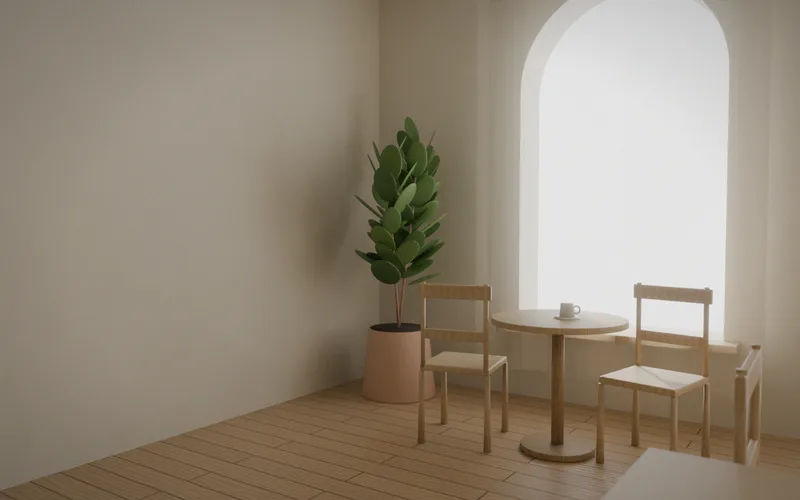

Бывшая ткацкая лавка научилась делать тишину. Мы оставили известь, дуб и три арки, а лишнее убрали.
- I
Задача
Заказчица получила помещение 64 м² с тремя старыми арочными окнами на южной стороне. Нужна кофейня, в которой хочется остаться на час, а не заскочить на пять минут. Бюджет скромный: дорогих материалов мало, но каждый на виду.
- II
Идея
Свет — главный материал. Стены из известковой штукатурки ловят его мягко, дуб теплеет к вечеру, а бумажные шары заменяют люстры. Единственный цветной жест — стойка из зелёного тадлакта цвета шалфея.
- III
Итог
Утром это светлая комната с мягкими тенями от арок. Вечером — тёплая гостиная с синими окнами. Общий стол на шесть человек стал местом, где знакомятся соседи.